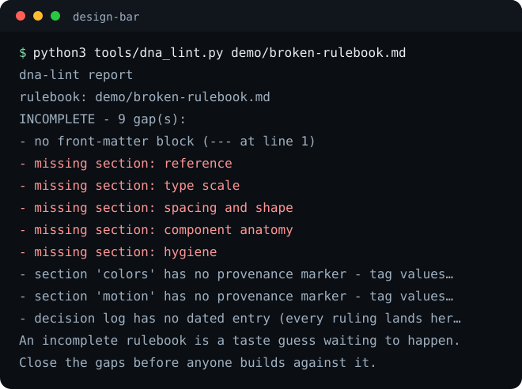

Taste you can grade in numbers
Write the rulebook before anyone builds. Check the build with code. Review the renders with fresh eyes. This page is the worked example: it clears the same bar it describes.
Read the rulebookWrite it down first
A DNA rulebook names the reference, the tokens, the scale, and the anatomy, with provenance on every value. Builders read it before they build.
Check it in code
Deterministic checkers grade the shipped page against the same numbers: headline economy, motion ceilings, slop tells. Pass or fail, named findings.
Review it fresh
Four widths, screenshots, and a reviewer who did not build it and never sees the builder's reasoning. Three rounds, then a human calls it.
The bar is written, so the argument is over
When taste lives in a file, a checker, and a review panel, "looks fine to me" stops being the last word.
